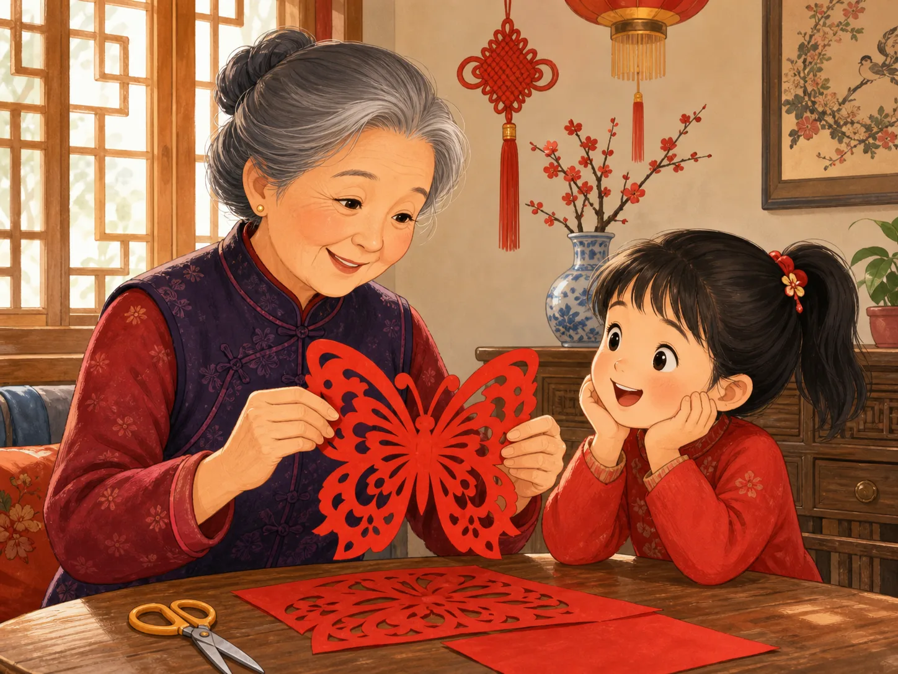
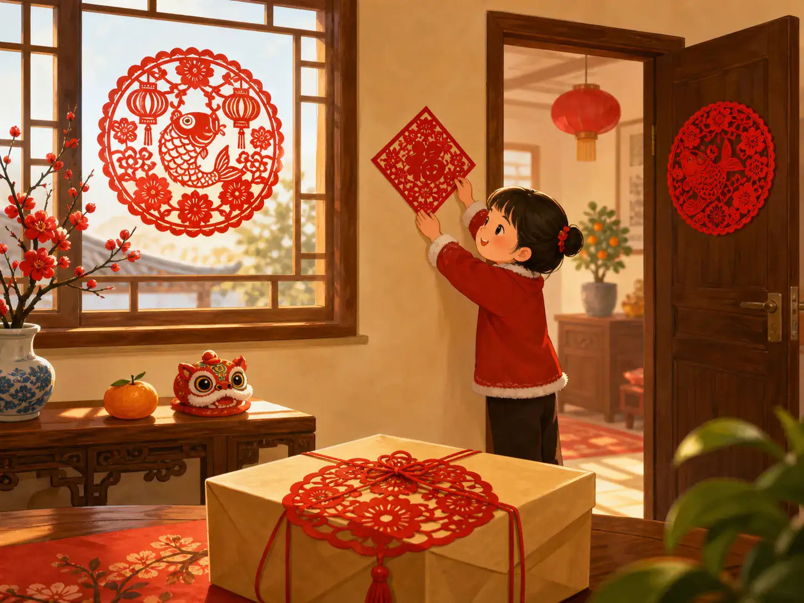
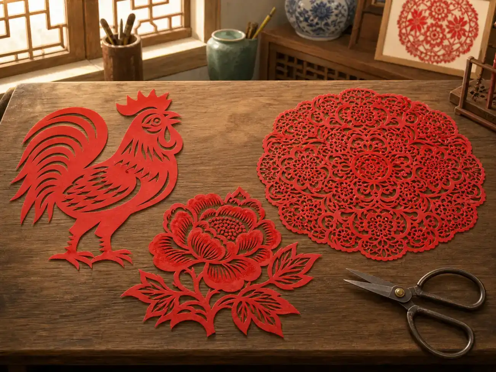

一张纸里，藏着多少只蝴蝶？
How Many Butterflies Are Hiding in One Sheet of Paper?
Page 1
纸打开以前，看不见蝴蝶
Before the Paper Opens

When the red paper opens, both matching wings of the butterfly appear together.
一张红纸对折起来。咔嚓，咔嚓。剪刀从纸边剪进几条弯线，又挖出几个小洞。纸还合着的时候，这些剪口乱七八糟，怎么看也不像一只蝴蝶。
可是，把纸轻轻打开——两边的翅膀一起展开了。触角出来了，翅膀里的小花纹也出来了，而且左右两边正好相对。奇怪的是，剪纸的人并没有先剪左翅膀，再剪右翅膀。纸折在一起时，剪刀一次穿过了两层；折痕打开，一道剪口也就同时出现在两边。
这正是剪纸（jiǎnzhǐ）最好玩的地方之一。完整的图案最后才出现，可是拿着剪刀的人，早在纸打开以前，就得先在脑子里看见它。
A square of red paper is folded in half. Snip, snip. The scissors cut a few curves along the edge and make several tiny holes. With the paper still folded, the shapes do not look much like anything.
Then the paper opens. Two wings spread out at the same time. There are feelers, little spaces inside the wings, and matching curves on both sides. A butterfly has appeared—but the cutter never cut one wing and then the other. The scissors passed through both layers of folded paper at once. When the fold opened, each cut appeared on both sides.
That surprise is one of the delights of Chinese paper-cutting, or jiǎnzhǐ (剪纸). The finished picture comes last. The person holding the scissors has to imagine it first.
Page 2
一刀，为什么会出现好几次？
One Cut Can Appear Again
如果把纸再折一次，事情会更有意思。同一个小剪口，打开以后可能出现两次、四次，甚至更多次——到底会变成什么，要看纸怎样折，也要看剪刀从哪里下手。一小段弧线，打开以后可能成了花瓣；一个小三角，可能变成大图案里一圈整齐的空洞。
所以剪纸有一点像倒着想问题。最后打开的图案已经在剪纸人的脑子里了，可是他手里拿着的，却还是一小叠看不出答案的纸。
而且，每一刀都不能乱来。铅笔是在纸上加东西，剪刀却是在把纸拿走。剪得太远，两块纸就可能分开；故意留下一条细细的纸，它又会像一座小桥，把蝴蝶的翅膀连着花，把叶子连着枝条。
原来，被剪掉的空地方，也是图案的一部分。
Now fold the paper again. A small cut may appear two, four, or even more times when the paper is opened, depending on how the sheet was folded and where the scissors went. A tiny curve can become part of a flower. A little triangle can turn into a row of openings around a larger design.
This means a paper-cut artist has to think backward. The open picture exists in the artist’s mind, but the hands are working on a folded piece of paper that looks nothing like the finished design.
And every cut matters. A pencil adds a line, but scissors take paper away. Cut too far, and part of the picture may fall off. Leave a thin strip of paper between two shapes, and it works like a tiny bridge, keeping a wing connected to a flower or a leaf connected to its stem.
The empty spaces are part of the picture too.
Page 3
窗户上的图案，也会说一句祝福
A Picture That Can Carry a Wish

A fish paper-cut can decorate a festival window and suggest the wish for abundance year after year.
纸终于打开以后，它还有了新的任务。剪纸可以贴在窗户上，也可以用来装点节日和喜庆的日子。不同地方、不同家庭、不同剪纸艺人，喜欢的图案和剪法并不完全一样：有的几刀就能看出一匹马、一朵花；有的却细得像花边。
有些图案还会悄悄说一句祝福。
比如一条鱼，有时候就不只是一条鱼。中文里的“鱼（yú）”和“余（yú）”听起来一样，“余”有剩下、富足的意思。所以人们看到鱼，也会想到“年年有余”——希望每一年都有富足的生活。
不过，剪纸并不是一本“看到这个图案，就只有这个答案”的密码书。同一个图案在不同地方、不同作品里，可以有不同的意思。有时候一朵花带着祝福，有时候它在讲一个故事，也有时候，剪纸的人只是觉得：这朵花剪出来一定很好看。
阳光照过窗户时，那些被剪掉的小洞也亮起来了。没有纸的地方，反而让整幅图案更清楚。
Once the paper opens, it can do more than surprise you. A paper-cut can decorate a window or a room for a celebration. Different places, families, and artists have created many kinds of designs, from bold shapes that can be recognized at once to patterns filled with tiny details.
Some pictures can also carry a good wish. A fish, for example, can be more than a fish. In Chinese, 鱼 (yú), meaning “fish,” sounds like 余 (yú), meaning “extra” or “surplus.” That sound connection helped make fish a popular image for wishes of plenty, including the expression 年年有余 (niánnián yǒuyú)—a wish to have abundance year after year.
But paper-cutting is not a secret codebook in which every picture has only one meaning. Designs change from place to place and from artist to artist. Sometimes a flower is a wish. Sometimes it is part of a story. And sometimes someone simply wanted to cut a beautiful flower.
When sunlight shines through the openings, the parts the scissors removed become just as visible as the red paper that remains.
Page 4
最后出现的，才是完整的图案
The Picture Appears Last

Paper-cuts can use bold shapes or details as fine as lace.
中国剪纸从来不只有一种样子。有的图案粗粗大大，一眼就能看懂；有的细得像蕾丝。剪纸艺人可以设计自己的新图案，今天也有人用电脑和现代工具帮助制作复杂的作品。不过，只要有一张纸和一把剪刀，还是可以从最简单的折、转、剪开始。
手剪出来的图案，也不一定每一处都完全相同。也许一片花瓣宽一点，也许一只蝴蝶的翅膀多弯了一点。这些细小的差别，正好留下了手转过纸、剪刀走过纸边的痕迹。
所以，一张纸里到底藏着多少只蝴蝶？
其实，纸里并没有藏着已经画好的蝴蝶。藏在里面的，是折痕带来的重复，是那些准备被剪掉的空白，是把各个部分连在一起的细细纸条，也是剪纸人在纸打开以前，已经先想好的那个图案。
等纸真正展开，所有这些看不见的决定，才一下子出现在眼前。
这就是剪纸的小小神奇之处：图案最后才出现，却必须有人先看见它。
Chinese paper-cutting has never been just one style. Some designs use large, strong shapes. Others are as fine as lace. Artists can invent their own patterns, and today modern tools can help create complicated cuts too. Yet a folded sheet of paper and a pair of scissors are still enough to begin.
A hand-cut picture may not be perfectly even. One petal may be a little wider. One butterfly wing may curve slightly differently from another. Those tiny differences are traces of the hands that turned the paper and guided the scissors.
So how many butterflies were hiding inside that sheet?
There were no finished butterflies printed inside it. What was hidden was the plan: folds that could repeat a cut, empty spaces waiting to become part of the picture, and narrow pieces of paper that would hold everything together.
Only when the sheet opens can you see all those choices at once.
That is the little magic trick of jiǎnzhǐ: the picture appears last, but someone had to see it before it was there.